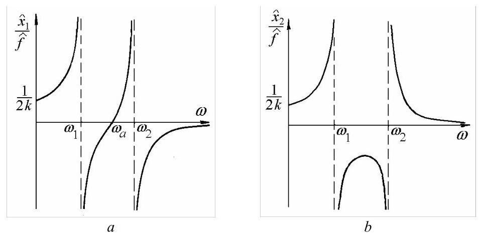

第16篇
示例4.2
考虑图4.2所示的系统，受到谐波力\({f}_{1} = {\widehat{f}}_{1}\cos {\omega t}\)和\({f}_{2} = {\widehat{f}}_{2}\cos {\omega t}\)的作用，求其稳态响应幅值。当\({f}_{2} = 0\)时，绘制导纳(receptance)的频率响应曲线。
解。运动方程可写为
利用坐标变换
并在左侧乘以模态矩阵(modal matrix)的转置，我们得到
或
对于谐波激励\(\{ f\} = \left\{ \widehat{f}\right\} \cos {\omega t}\)，稳态响应为
\(\{ q\} = \{ \widehat{q}\} \cos {\omega t}\) . 模态坐标(modal coordinates)的幅值
构型空间中的振幅由
当\({f}_{2} = 0\)和\({f}_{1} = f\)时，振幅向量可表示为
而导纳(receptances)为
或
频率响应曲线如图4.5所示。

图4.5
当激励频率等于系统的任一固有频率时，在\({\omega }_{1} = \frac{1}{\sqrt{2}}\sqrt{\frac{k}{m}}\)和\({\omega }_{2} = \sqrt{2}\sqrt{\frac{k}{m}}\)处发生共振。当\(\omega = {\omega }_{a} = \sqrt{\frac{k}{m}}\)时，第一质量块在空间保持静止，\({\widehat{x}}_{1} = 0\)，而第二质量块运动，\({\widehat{x}}_{2} \neq 0\)，此状态定义为反共振。反共振频率等于由弹簧\(k\)和质量\(m\)组成的子系统的固有频率。该子系统称为动力吸振器(dynamic vibration absorber)。由外加力每周期引入系统的能量进入该振动系统部分，使质量\({2m}\)在空间保持静止，这一条件在许多实际应用中非常理想。
4.1.5.2 频谱分析求解
将(4.34)和(4.35)代入方程(4.31, a)，我们得到
或
方程(4.43)表示一组线性代数方程，可用克拉默法则(Cramer's rule)求解。方程(4.44)中的求逆从不实际执行。
Example 4.3
例4.3
考虑图4.2所示系统，受到谐波驱动力\({f}_{1} = {\widehat{f}}_{1}\cos {\omega t}\)作用，通过直接频谱分析求其稳态响应幅值。
解:运动方程(4.31)为
将解(4.35)代入上述方程，我们得到一组两个代数方程
利用克拉默法则，幅值\({\widehat{x}}_{1}\)和\({\widehat{x}}_{2}\)为
或写成与模态分析所得形式接近的表达式
分母可识别为特征行列式，当激励频率等于任一固有频率时，幅值将无限增大。系统存在两个共振。
Matlab Demo


%% 1. 初始化
clear; % 清除工作区变量
clc; % 清空命令行窗口
close all; % 关闭所有图形窗口
%% 2. 系统参数定义
m = 1; % 质量单位 (例如: kg)
k = 2; % 刚度单位 (例如: N/m)
f_hat = 1; % 输入激励力f1的幅值 (用于归一化)
fprintf('系统参数设置为:\n m = %g\n k = %g\n\n', m, k);
%% 3. 计算关键频率
w1_sq = k / (2*m);
w2_sq = 2 * k / m;
w1 = sqrt(w1_sq);
w2 = sqrt(w2_sq);
wa = sqrt(k/m);
fprintf('关键频率计算结果:\n');
fprintf(' 固有频率 w1 = %.3f rad/s (第一共振点)\n', w1);
fprintf(' 固有频率 w2 = %.3f rad/s (第二共振点)\n', w2);
fprintf(' 反共振频率 wa = %.3f rad/s (m1静止点)\n\n', wa);
%% 4. 计算并绘制静态频率响应曲线
w = linspace(0, 2.5 * w2, 2000);
denominator = 2*m * (w1_sq - w.^2) .* (w2_sq - w.^2);
denominator(abs(denominator)<1e-6) = eps;
numerator_x1 = (k/m - w.^2) * f_hat;
numerator_x2 = (k/m) * f_hat;
x1_hat = numerator_x1 ./ denominator;
x2_hat = numerator_x2 ./ denominator;
alpha_11 = x1_hat / f_hat;
alpha_21 = x2_hat / f_hat;
figure('Name', '静态频率响应曲线 (导纳)', 'NumberTitle', 'off');
sgtitle('静态频率响应曲线 (复现图4.5)');
subplot(2, 1, 1);
plot(w, alpha_11, 'b-', 'LineWidth', 1.5);
hold on; grid on;
xline(w1, '--r', '\omega_1 (共振)');
xline(w2, '--r', '\omega_2 (共振)');
xline(wa, '--g', '\omega_a (反共振)');
title('质量块 1 的响应');
xlabel('激励频率 \omega (rad/s)');
ylabel('导纳 \alpha_{11} = \hat{x}_1 / \hat{f}');
ylim([-10, 10]);
ax = gca; ax.XAxisLocation = 'origin'; ax.YAxisLocation = 'origin';
subplot(2, 1, 2);
plot(w, alpha_21, 'b-', 'LineWidth', 1.5);
hold on; grid on;
xline(w1, '--r', '\omega_1 (共振)');
xline(w2, '--r', '\omega_2 (共振)');
title('质量块 2 的响应');
xlabel('激励频率 \omega (rad/s)');
ylabel('导纳 \alpha_{21} = \hat{x}_2 / \hat{f}');
ylim([-10, 10]);
ax = gca; ax.XAxisLocation = 'origin'; ax.YAxisLocation = 'origin';
fprintf('静态频率响应图已生成。\n');
fprintf('接下来将开始播放系统动态行为的动画...\n');
pause(2);
%% 5. 动态行为动画演示
animate_omegas = [0.5*w1, w1, wa, 1.5*w1, w2, 1.2*w2];
animate_labels = {'Below Resonance', 'Near 1st Resonance (w1)', 'Anti-Resonance (wa)', 'Between Resonances', 'Near 2nd Resonance (w2)', 'Above Resonance'};
anim_fig = figure('Name', 'System Dynamic Behavior Animation', 'NumberTitle', 'off');
ax_anim = axes(anim_fig);
% 动画参数
mass_diameter = 1.0;
mass_radius = mass_diameter / 2;
equil_pos1 = 3;
equil_pos2 = 7;
right_wall_pos = 10;
for i = 1:length(animate_omegas)
omega_anim = animate_omegas(i);
denom_anim = 2*m * (w1_sq - omega_anim^2) * (w2_sq - omega_anim^2);
if abs(denom_anim) < 0.1
amp_limit = 1.5;
x1_amp = min(amp_limit, max(-amp_limit, (k/m - omega_anim^2) / denom_anim));
x2_amp = min(amp_limit, max(-amp_limit, (k/m) / denom_anim));
else
x1_amp = (k/m - omega_anim^2) / denom_anim;
x2_amp = (k/m) / denom_anim;
end
t_period = 2*pi/omega_anim;
t = linspace(0, 3*t_period, 200);
for j = 1:length(t)
cla(ax_anim); % 清除上一帧
pos1 = equil_pos1 + x1_amp * cos(omega_anim * t(j));
pos2 = equil_pos2 + x2_amp * cos(omega_anim * t(j));
% 绘制X轴作为参考线
plot(ax_anim, [-1, right_wall_pos + 1], [0, 0], 'k--');
hold(ax_anim, 'on');
plot(ax_anim, [0, 0], [-mass_diameter, mass_diameter], 'k-', 'LineWidth', 2); % 左墙
plot(ax_anim, [right_wall_pos, right_wall_pos], [-mass_diameter, mass_diameter], 'k-', 'LineWidth', 2); % 右墙
plot(ax_anim, 0, 0, 'ko', 'MarkerFaceColor', 'k', 'MarkerSize', 8); % 左侧黑点
plot(ax_anim, right_wall_pos, 0, 'ko', 'MarkerFaceColor', 'k', 'MarkerSize', 8); % 右侧黑点
plot_spring(ax_anim, 0, pos1 - mass_radius, mass_radius); % 墙到m1
plot_spring(ax_anim, pos1 + mass_radius, pos2 - mass_radius, mass_radius); % m1到m2
plot_spring(ax_anim, pos2 + mass_radius, right_wall_pos, mass_radius); % m2到右墙
rectangle(ax_anim, 'Position', [pos1-mass_radius, -mass_radius, mass_diameter, mass_diameter], 'FaceColor', 'b', 'Curvature', [1 1]);
rectangle(ax_anim, 'Position', [pos2-mass_radius, -mass_radius, mass_diameter, mass_diameter], 'FaceColor', 'r', 'Curvature', [1 1]);
text(ax_anim, pos1, mass_radius*1.5, '2m', 'HorizontalAlignment', 'center');
text(ax_anim, pos2, mass_radius*1.5, 'm', 'HorizontalAlignment', 'center');
arrow_start_x = pos1 + mass_radius;
arrow_vector_x = 0.8*cos(omega_anim*t(j));
quiver(ax_anim, arrow_start_x, 0, arrow_vector_x, 0, 'Color', 'g', 'LineWidth', 2, 'MaxHeadSize', 0.8);
text(ax_anim, arrow_start_x+0.1, 0.2, 'f_1(t)');
axis(ax_anim, 'equal');
xlim(ax_anim, [-1, right_wall_pos + 1]);
ylim(ax_anim, [-3, 3]);
title(ax_anim, sprintf('Animation: %s (\\omega = %.3f rad/s)', animate_labels{i}, omega_anim));
drawnow;
pause(0.01);
end
pause(1);
end
function plot_spring(ax, x1, x2, height)
if abs(x1-x2) < 1e-6, return; end
nodes = 10;
x_coords = linspace(x1, x2, nodes * 2 + 1);
y_coords = zeros(1, length(x_coords));
pattern = repmat([1, -1], 1, ceil(nodes / 2));
y_coords(2:2:end-1) = height / 2 * pattern(1:nodes);
plot(ax, x_coords, y_coords, 'k-');
end